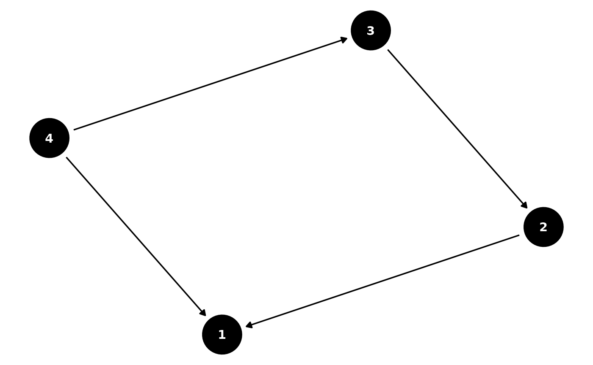

Introduction
The sometears package is a collection of functions for estimating directed acyclic graphs (DAGs) from data. The package includes functions for estimating the adjacency matrix of a DAG, thresholding the adjacency matrix, and simulating data from a DAG. The package also includes functions for estimating the structure of a DAG from data, including functions for estimating the adjacency matrix of a DAG, thresholding the adjacency matrix, and simulating data from a simple linear SEM. The two main algorithms that the package implements are the DAGMA algorithm from Bello et al. (2023) and the TOPO algorithm from Deng et al. (2023).
Generate Data
We can generate data from a simple linear SEM using the
sim_linear_sem function. This function generates data from
a simple linear SEM with a given adjacency matrix
such that value
represents the direct effects from variable
to variable
.
We assume that the errors are normally distributed with mean 0 and
variance
such that
$$ X = X W + \epsilon \quad \epsilon \sim N(0, \Sigma)\\ (I - W)^{-1} X \sim N(0, (I - W)^{-T} \Sigma (I - W)^{-1}) $$
set.seed(13)
B <- matrix(
c(0, 2, 0, 2,
0, 0, -2, 0,
0, 0, 0, 2,
0, 0, 0, 0),
nrow = 4, ncol = 4, byrow = TRUE)
# Plot the DAG
B_long <- adj_mat_to_long(B)
B_long$name <- B_long$from
ggdag(as_tidy_dagitty(B_long)) +
theme_void()
# Simulate from the DAG
d <- ncol(B)
X <- sim_linear_sem(B, n = 500, Sigma = 1 * diag(ncol(B)))Estimate DAG with DAGMA
DAGMA uses a path-finding algorithm to estimate the adjacency matrix
of a DAG. We used the torch package in R to implement the
DAGMA algorithm from Bello et al. (2023). Initially we used the ADAM
optimizer but found that torch::lbfgs worked better for the
algorithm. The algorithm is quite sensitive to the parameters and
sometimes can be difficult to converge. This is a limitation of the
algorithm and we are working on improving the convergence properties to
better align with the python version. Note: This is not evaluated since
torch needs to be installed via torch::install_torch
dagma_W <- dagma_fit_linear(
X,
trace = T,
mu = c(1, 0.1, 0.01, 0.001),
l1_beta = 0.002)
#> Params: mu: 1, s: 1.1, epoch: 5, l1_beta: 0.002
#> torch_tensor
#> 0.0993 0.4785 -0.4886 1.1276
#> 0.1768 0.1299 -0.6467 -0.1957
#> -0.1403 -0.1679 0.2113 1.1188
#> 0.0325 -0.0920 0.2253 0.3827
#> [ CPUFloatType{4,4} ][ requires_grad = TRUE ]
#> Params: mu: 0.1, s: 1.1, epoch: 5, l1_beta: 0.002
#> torch_tensor
#> 0.0388 1.4284 -0.5675 1.7394
#> 0.0376 0.0502 -1.4493 -0.2000
#> -0.0355 -0.0480 0.0662 1.7507
#> -0.0146 -0.0313 0.0459 0.0643
#> [ CPUFloatType{4,4} ][ requires_grad = TRUE ]
#> Params: mu: 0.01, s: 1.1, epoch: 5, l1_beta: 0.002
#> torch_tensor
#> 0.0059 1.9885 -0.1706 1.9246
#> 0.0033 0.0052 -1.9058 0.0156
#> -0.0020 -0.0030 0.0055 1.9915
#> -0.0008 -0.0017 0.0030 0.0053
#> [ CPUFloatType{4,4} ][ requires_grad = TRUE ]
#> Params: mu: 0.001, s: 1.1, epoch: 5, l1_beta: 0.002
#> torch_tensor
#> 6.0011e-04 2.0275e+00 -1.4186e-01 1.9360e+00
#> 3.2878e-04 5.1134e-04 -1.9381e+00 3.0202e-02
#> -1.9423e-04 -2.9181e-04 5.4719e-04 2.0087e+00
#> -7.4461e-05 -1.5909e-04 2.9662e-04 5.1541e-04
#> [ CPUFloatType{4,4} ][ requires_grad = TRUE ]
print(round(dagma_W, 2))
#> [,1] [,2] [,3] [,4]
#> [1,] 0 2.03 -0.14 1.94
#> [2,] 0 0.00 -1.94 0.03
#> [3,] 0 0.00 0.00 2.01
#> [4,] 0 0.00 0.00 0.00DAGMA with lbfgs
We also implemented the DAGMA algorithm with the L-BFGS optimizer
from the lbfgs package. This adds a better way to do L1
penalty via L-BFGS. We found that the algorithm is still quite sensitive
to the parameters and sometimes can be difficult to converge. A very
small L1 penalty is needed for the algorithm to converge.
dagma_W <- dagma_fit_linear_optim(
X,
trace = T,
s = 1.1, # logdet penalty
l1_beta = 0.0001, # Should be small or else it will not converge
mu = c(1, 0.1, 0.01))
#> Params: mu = 1 , s = 1.1 , l1_beta = 1e-04
#> Current W:
#> [,1] [,2] [,3] [,4]
#> [1,] 0.10182315 0.49522506 -0.4892714 1.2423744
#> [2,] 0.18023098 0.12413810 -0.6312867 -0.3058594
#> [3,] -0.13289579 -0.15952087 0.2138033 1.0838681
#> [4,] 0.03504573 -0.09167694 0.2307984 0.3900861
#> Params: mu = 0.1 , s = 1.1 , l1_beta = 1e-04
#> Current W:
#> [,1] [,2] [,3] [,4]
#> [1,] 0.03489896 1.45599576 -0.39236635 1.93486742
#> [2,] 0.03215653 0.04851488 -1.56056032 -0.35166033
#> [3,] -0.02773212 -0.04177851 0.06487234 1.72473115
#> [4,] -0.01137913 -0.02895497 0.04620984 0.06534263
#> Params: mu = 0.01 , s = 1.1 , l1_beta = 1e-04
#> Current W:
#> [,1] [,2] [,3] [,4]
#> [1,] 0.0047574670 1.949036510 0.000000000 2.031468144
#> [2,] 0.0027600829 0.005351058 -2.009785687 -0.111376551
#> [3,] -0.0015344454 -0.002975090 0.005777199 1.958427485
#> [4,] -0.0006156993 -0.001727987 0.003247285 0.005713384
print(round(dagma_W, 2))
#> [,1] [,2] [,3] [,4]
#> [1,] 0 1.95 0.00 2.03
#> [2,] 0 0.01 -2.01 -0.11
#> [3,] 0 0.00 0.01 1.96
#> [4,] 0 0.00 0.00 0.01Estimate DAG with TOPO
TOPO swaps pairs in a valid topological order that will decrease the loss function. We find that this algorithm works extremely fast in the linear case and is able to recover the true DAG.
Sachs data analysis
data(sachs)
set.seed(1234)
d_sachs <- ncol(sachs)
est_sachs <- fit_topo(as.matrix(sachs), 1:d_sachs, s=1.1)$W
col_names <- colnames(sachs)
result_df <- data.frame(from = character(), to = character(), strength = numeric(), direction = character(), stringsAsFactors = FALSE)
threshold_graph <- 0.5
for (i in 1:nrow(est_sachs)) {
for (j in 1:ncol(est_sachs)) {
if ((est_sachs[i, j] > threshold_graph) || (est_sachs[i, j] < -threshold_graph)) {
new_row <- data.frame(from = col_names[i], to = col_names[j])
result_df <- rbind(result_df, new_row)
}
}
}
if (requireNamespace("bnlearn", quietly = TRUE)) {
dag <- bnlearn::empty.graph(nodes = colnames(sachs))
bnlearn::arcs(dag) <- result_df
bnlearn::graphviz.plot(dag)
} else {
print(est_sachs)
}
#> [,1] [,2] [,3] [,4] [,5] [,6]
#> [1,] 0.000000000 0.00000000 0.000000000 0.17194605 0.07877942 0.07385326
#> [2,] 1.352252378 0.00000000 0.000000000 0.25278685 0.07214880 -0.00900717
#> [3,] 0.373731358 0.49456100 0.000000000 0.78436901 0.52048313 0.29225973
#> [4,] 0.000000000 0.00000000 0.000000000 0.00000000 0.00000000 0.00000000
#> [5,] 0.000000000 0.00000000 0.000000000 0.80603604 0.00000000 0.00000000
#> [6,] 0.000000000 0.00000000 0.000000000 -0.18228967 -0.08522520 0.00000000
#> [7,] 0.000000000 0.00000000 0.000000000 0.14364721 0.05793260 0.00000000
#> [8,] 0.000000000 0.00000000 0.000000000 0.00000000 0.00000000 0.00000000
#> [9,] 0.006803594 -0.01034267 -0.007080206 0.05773732 -0.02518768 0.07983138
#> [10,] 0.229475400 0.44804562 0.434849430 0.36661795 0.32247086 0.23740054
#> [11,] 0.000000000 0.00000000 0.000000000 0.08633655 0.00000000 0.00000000
#> [,7] [,8] [,9] [,10] [,11]
#> [1,] 0.04033524 2.0653899 0 0.000000 0.2553003
#> [2,] -0.02151390 -0.5569615 0 0.000000 -0.2308707
#> [3,] 0.13137972 3.1332025 0 0.000000 0.4849756
#> [4,] 0.00000000 0.1651542 0 0.000000 0.0000000
#> [5,] 0.00000000 0.2235938 0 0.000000 0.1478282
#> [6,] 1.40166072 -14.8242956 0 0.000000 -0.2967703
#> [7,] 0.00000000 12.0324482 0 0.000000 0.2146607
#> [8,] 0.00000000 0.0000000 0 0.000000 0.0000000
#> [9,] 0.06345477 -0.2720148 0 1.881136 -1.5427374
#> [10,] 0.12184941 4.6164549 0 0.000000 0.9780254
#> [11,] 0.00000000 0.2590884 0 0.000000 0.0000000